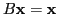
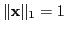
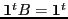
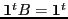

In many application areas, including web page ranking and networking
systems, finding the steady-state distribution vector of a Markov system
is of interest, and often difficult to compute efficiently. The
steady-state vector is the solution to a nonsymmetric eigenproblem
, subject to probability constraint
, where  is column stochastic,
. Recently,
scalable methods involving Smoothed Aggregation (SA) and Algebraic
Multigrid (AMG) were proposed to solve such eigenvalue problems. These
methods
use multiplicative iterate updates versus additive error corrections that
are typically used in linear solvers. This work discusses the
implementation of an outer iteration to the existing methods that
accelerates convergence of multiplicative update methods, similar in
principle to a preconditioned flexible Krylov wrapper applied to a linear
problem. The acceleration is performed by selecting a linear combination
of old iterates to minimize a functional that has the steady-state
solution direction as a unique minimizing zero. The quality of the
acceleration is demonstrated with a few simple examples.
is column stochastic,
. Recently,
scalable methods involving Smoothed Aggregation (SA) and Algebraic
Multigrid (AMG) were proposed to solve such eigenvalue problems. These
methods
use multiplicative iterate updates versus additive error corrections that
are typically used in linear solvers. This work discusses the
implementation of an outer iteration to the existing methods that
accelerates convergence of multiplicative update methods, similar in
principle to a preconditioned flexible Krylov wrapper applied to a linear
problem. The acceleration is performed by selecting a linear combination
of old iterates to minimize a functional that has the steady-state
solution direction as a unique minimizing zero. The quality of the
acceleration is demonstrated with a few simple examples.